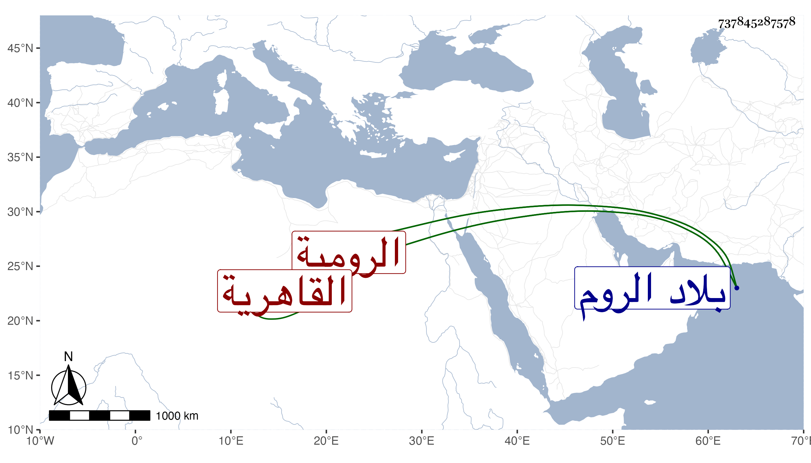

0902Sakhawi.DawLamic.ITO20230111-ara1.EIS1600.737845287578
Biography ID: 737845287578
213
زاده خوندشاه ابنة الأمير أرض بك بن الامير محمد كرشجي بن يلدرم بايزيد بن عثمان جق الرومية ثم القاهرية أخت سليمان الماضي قدمت معه من الروم فأكرمهما الاشرف برسباي وأنزلهما بالدور السلطانية من القلعة مدة ثم حسن بعض الاروام للالتها الهرب بهما إلى بلادهما وتواطئوا عليه واستعدوا له وحضر شينى إلى ثغر رشيد مشحون بالزاد والمقاتلة وهم في هيئة تجار ولا زال اللا لا يرتقب غفلة حتى قربهما من وسط القلعة إلى الثغر المشار اليه فلما علم السلطان بادر لارسال عسكر من خاصته في اثرهم لتوهمه أنها مكيدة من مراد بك بن عثمان متملك الروم لكونه أرسل يطلبهما منه غير مرة وهو يمتنع خوفا على سليمان من قتله فلما وصل العسكر تقاتل مع أولئك فكان الظفر لعسكر السلطان وعادوا بهما وبمن شاء الله من الاروام فقتل منهم جماعة وقطع أيدي آخرين واستمرا مقيمين في مكانهما الاول إلى ان قدرت وفاة سليمان في طاعون سنة احدى وأربعين وتزوج هو بهذه ولم يلبث أن مات فتزوجها الظاهر واستولدها أولادا ثم طلقها بعد سنة ثلاث وخمسين ونزلت دارها بالجودرية حتى تزوجها برسباي البجاسي أحد المقدمين ودامت عنده حتى ماتت بعد طول تمرضها في أواخر رجب سنة تسع وخمسين وقد زادت على الثلاثين وخلفت شيئا كثيرا رحمها الله وعوضها الجنة .
